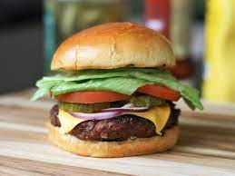

Burger

The Burger, the mighty American sandwich.
A burger is a culinary masterpiece that begins with a tender and juicy ground meat patty, typically beef, but sometimes chicken, turkey, or even plant-based alternatives. It's seasoned to perfection, delivering a mouthwatering blend of flavors that dance on your taste buds. The patty is then sandwiched between two fluffy buns, with a variety of toppings to choose from, such as cheese, lettuce, tomato, onion, and sauces.
Ingredients
- beef patty
- lettuce
- onion
- tomato
- pickles
- toasted bun
- choice of condiments
Steps
- Prepare the Patty: Season ground beef with salt and pepper, and shape it into a patty.
- Cook the Patty: Grill or cook the patty in a skillet until it reaches the desired level of doneness.
- Toast the Bun: Toast the burger bun on the grill or in a toaster for a crisp texture.
- Add Cheese: Place a slice of cheese on the cooked patty and let it melt.
- Assemble Ingredients: Arrange lettuce, tomato slices, pickles, and finely sliced onions.
- Condiments: Spread ketchup, mustard, and mayonnaise on the bun.
- Assemble the Burger: Place the cheesy patty on the bottom bun, add the veggies, and cover with the top bun.
- Optional Additions: Consider adding bacon for extra flavor.
- Enjoy a juicy burger.
Back Home